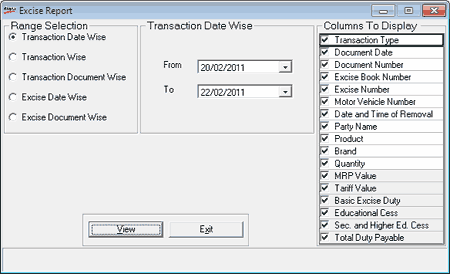

The Excise Report gives details on the Excise Invoices that are generated in Shoper 9. You can generate this report based on any of the following options: Transaction Date wise, Transaction wise, Transaction Document wise, Excise Date wise or Excise Document wise. Additionally, you can choose the details to be displayed in the reports.
How to reach: Reports > MIS > Excise Report
The Excise Report window is displayed.

Range Selection: Select the appropriate range for the required report generation. The options available are Transaction Date wise, Transaction wise, Transaction Document wise, Excise Date wise or Excise Document wise.
Columns To Display: Select the columns to be displayed in the report. All columns are selected by default. You can deselect columns as required. The columns that are grayed and placed towards the end of the list cannot be deselected, as they are mandatory columns in the report.